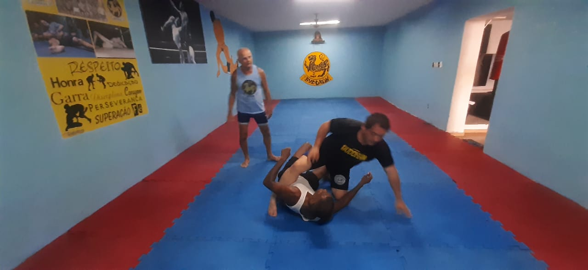

Bienvenido a la casa de la Luta Livre en México
¿Sabes que es la Luta Livre?
La luta livre y el vale tudo son dos formas de artes marciales originarias de Brasil, con historias y enfoques ligeramente diferentes. **Luta Livre:** La luta livre, que se traduce como "lucha libre" en portugués, es un estilo de lucha brasileño que se desarrolló principalmente en las décadas de 1920 y 1930. A diferencia de la lucha libre mexicana, que es más conocida por sus movimientos acrobáticos y teatrales, la luta livre brasileña es un estilo de lucha más centrado en la lucha agarrada y el sometimiento, con influencias de la lucha grecorromana, la lucha olímpica y el judo. Se enfoca en técnicas de sumisión, estrangulaciones, y lanzamientos, y suele practicarse sin el uso de un gi (uniforme de lucha). A lo largo del tiempo, la luta livre se ha dividido en diferentes ramas y estilos, algunos más enfocados en la lucha en pie, mientras que otros se centran más en el combate en el suelo. En Brasil, la luta livre ha influido en varios otros estilos de lucha, como el Brazilian Jiu-Jitsu (BJJ), que a menudo se considera una evolución de la luta livre. **Vale Tudo:** Vale tudo, que se traduce como "todo vale" en portugués, es un estilo de combate completo que se originó en Brasil y se popularizó en la década de 20 y 30. Originalmente, los combates de vale tudo eran eventos sin reglas, donde los competidores podían usar una amplia gama de técnicas de lucha, incluyendo golpes, patadas, rodillazos, codos, lucha en el suelo y sumisiones. Estos eventos a menudo se realizaban en circunstancias informales, como ferias o festivales locales. A medida que el vale tudo ganó popularidad, se introdujeron algunas reglas para hacer los combates más seguros y justos, aunque seguían siendo eventos brutales y desafiantes. Con el tiempo, el vale tudo evolucionó en lo que ahora conocemos como las artes marciales mixtas (MMA), que combina elementos de diferentes estilos de lucha, como el boxeo, el kickboxing, el jiu-jitsu, la lucha y el muay thai, con reglas más estructuradas y protocolos de seguridad más estrictos. Tanto la luta livre como el vale tudo han tenido un impacto significativo en el desarrollo de las artes marciales en Brasil y en todo el mundo, y han contribuido a la popularidad y la evolución de deportes como el Brazilian Jiu-Jitsu y las artes marciales mixtas (MMA).
